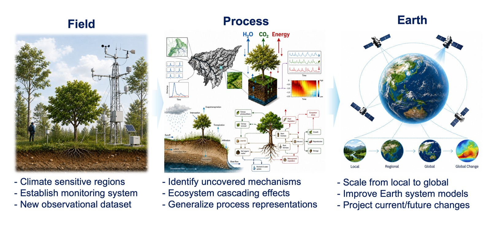

My research vision is to establish a Field-to-Earth Ecohydrology that links direct observations of ecosystem processes to more faithful representations of the Earth system.
The path runs in one direction and then back again. Field measurement and remote sensing supply the evidence; mechanistic study turns that evidence into process understanding; and process understanding is what makes an Earth system model worth trusting when it is asked about a future we have not observed.

Field
Earth-system signals captured through field measurements and remote sensing provide the evidence needed to diagnose current ecosystem conditions, identify emerging stresses, and distinguish transient variability from persistent change. They also reveal phenomena and mechanisms that were previously unresolved.
My field research spans the Arctic forest–tundra ecotone and the Amazon rainforest, where I have operated monitoring systems on soil, trees and atmosphere to investigate water and energy exchange. Observation is not a preliminary step here. It is where the unresolved questions announce themselves.
Process
Observations become useful to the Earth system only once the mechanism behind them is understood. From Arctic radiation records I developed a correction framework for precipitation-induced measurement bias, and showed how Arctic greening can amplify warming through land–atmosphere feedbacks. From Amazon sapflow I proposed sapflow functional types and a tree-trait-based framework for upscaling water-use strategies.
The same principle drives my methodological work. I introduced extreme evapotranspiration as an ecohydrological shock and built an event-based framework to quantify its frequency, duration, intensity and severity; across a global flux-tower dataset it occurs on roughly 5% of days yet accounts for some 10–15% of annual evapotranspiration. And with EcoLPT I reconstruct the Lagrangian history of water — origin, trajectory, residence time, path length — that Eulerian states and fluxes cannot reveal on their own.
Earth
Mechanistic insight informs predictive frameworks that improve the realism of Earth system models, strengthen our capacity to anticipate ecosystem trajectories, and reduce uncertainty in projections of environmental change.
In the near term I am extending field-monitoring collaborations in climate-sensitive regions to examine how vegetation regulates water and carbon cycling under drought, wildfire and other shocks, and extending EcoLPT toward biogeochemical transport and urban flood applications. Beyond that, I am building hybrid frameworks that combine process-based models with AI to represent vegetation–hydrology interactions, and applying them under future climate and land-cover scenarios to identify emerging vulnerability hotspots.
The end of the path is not a better model. It is actionable knowledge — early-warning indicators, priority regions, and scenario-based guidance for drought and wildfire preparedness, ecosystem restoration, and sustainable water and land management.